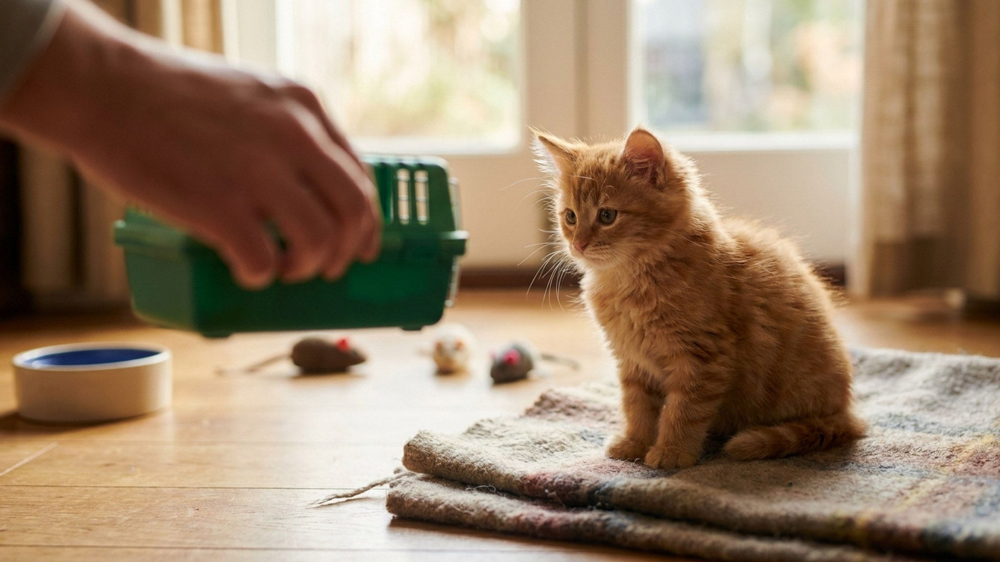

Первый визит котёнка к ветеринару: что проверят, какие прививки и как подготовиться

24 мая 2026 · 8 минут чтения · Котята · Здоровье
Первый визит к ветеринару — один из важнейших моментов в жизни котёнка. Не потому что это «для галочки», а потому что именно сейчас устанавливается базовый уровень здоровья, выявляются скрытые патологии и закладывается схема вакцинации на первый год. При правильной подготовке визит проходит без стресса и для котёнка, и для хозяина.
🐾 Первая помощь — всегда под рукой
AnimaLife подскажет, что делать в тревожной ситуации с питомцем ещё до визита к врачу. Откройте в один тап.
Открыть AnimaLife → Открыть в MAX →
Когда идти в первый раз
Оптимальный возраст для первого визита — 8-10 недель. Именно в этот период:
- Материнский иммунитет начинает снижаться — самое время для первой вакцинации.
- Котёнок уже достаточно крепок для осмотра и манипуляций.
- Окно социализации (4-14 недель) ещё открыто — ранний позитивный опыт с ветеринаром снижает стресс от всех последующих визитов.
Если котёнок попал к вам старше (12-16 недель) — всё равно к врачу в первые 3-5 дней. Схема вакцинации будет скорректирована под возраст.
Исключение: котёнок явно болен при поступлении (вялый, не ест, понос, выделения из носа или глаз) — в ветклинику в тот же день, не ждать 8 недель.
Что возьмите с собой
- Ветеринарный паспорт — если есть от заводчика или приюта. Если нет — клиника заведёт сама.
- Данные о предыдущих прививках — если котёнок уже был вакцинирован.
- Информацию о питании — чем кормите, сколько раз, какой корм. Ветеринар оценит рацион.
- Образец кала — свежий (не старше 2 часов), в чистом контейнере. Нужен для анализа на гельминты и протозоа. Необязательно, но ускоряет диагностику.
- Переноску — не руки. Переноска защищает котёнка от стресса в зале ожидания и исключает падения. Мягкая переноска-сумка комфортнее жёсткой для маленького котёнка.
Что проверяет ветеринар при первом осмотре
Первичный осмотр котёнка — это системный скрининг состояния здоровья. Стандартный список:
Общий осмотр:
- Вес, упитанность, общий тонус — котёнок должен быть округлым, активным, с блестящей шерстью.
- Температура — норма 38,1-39,2°С.
- Слизистые оболочки — цвет и влажность десён, конъюнктивы.
- Лимфоузлы — увеличение сигнализирует об инфекции или воспалении.
Голова и органы чувств:
- Глаза — выделения, помутнение, «третье веко». Выделения коричневого или зелёного цвета — признак инфекции.
- Уши — налёт, тёмный осадок (отодекоз), запах. Ушной клещ у котят — частая находка.
- Нос — выделения, трещины, корки.
- Рот — десны, молочные зубы (у котёнка 26 молочных зубов), прикус.
Туловище:
- Сердце и лёгкие — аускультация. Шумы в сердце у котят встречаются и не всегда патологичны, но требуют наблюдения.
- Живот — пальпация. Увеличение органов, боль, напряжение брюшной стенки.
- Пупок — грыжа (видна как мягкое выпячивание) встречается у 10-15% котят, часть требует хирургического лечения.
Кожа и шерсть:
- Блохи и блошиный помёт.
- Признаки грибковой инфекции (стригущий лишай) — очаговые облысения с шелушением, особенно у котят из приютов.
- Кожные складки у конкретных пород (шотландские вислоухие, британские).
Половые органы:
- Пол котёнка (не всегда очевидно в 8 недель).
- Крипторхизм у котов — нахождение яичек в брюшной полости вместо мошонки. Требует хирургического вмешательства.
Схема вакцинации котёнка
Основные прививки, которые делают всем котятам вне зависимости от образа жизни:
- Комплексная вакцина FVRCP (ринотрахеит, калицивироз, панлейкопения) — базовый обязательный набор. Первая в 8-9 недель, ревакцинация через 3-4 недели, затем ежегодно.
- Бешенство — в 12 недель или позже по схеме вакцины. Обязательна для выезда за рубеж и ряда регионов России. Вносится в ветеринарный паспорт с печатью.
По показаниям (уличные котята, питомники, контакт с другими животными):
- FeLV (вирусная лейкемия кошек) — рекомендуется котятам, имеющим выход на улицу или в контакте с другими кошками неизвестного статуса.
- Хламидиоз — в питомниках, где есть проблема.
- Бордетелла — при содержании в крупных группах.
Что нельзя делать перед прививкой: не вакцинировать больного котёнка, при повышенной температуре, после стресса (переезд, транспортировка) — минимум 5-7 дней на адаптацию. Не совмещать прививку с операцией в один день.
После прививки: место укола не мочить 24 часа, ограничить активность в день вакцинации, 2-3 дня карантин (не выводить на улицу, не контактировать с непривитыми животными). Небольшая вялость и снижение аппетита в день прививки — норма. Отёк в месте укола размером с горошину — норма, уходит за 3-5 дней.
Анализы и обработка от паразитов
Анализы при первом визите:
- Кал на гельминты и простейших (кокцидии, лямблии) — особенно важно для котят из приютов, подобранных с улицы или из питомников.
- ПЦР или экспресс-тест на FIV (вирусный иммунодефицит) и FeLV (лейкемия) — для котят неизвестного происхождения.
- Соскоб на кожные патологии при подозрении на лишай или клещей.
Обработка от паразитов — схема:
- Глисты: за 10-14 дней до первой прививки, затем раз в 3 месяца до года. Препараты: Мильбемакс котята, Дронтал котята (строго по весу!). Не использовать «для взрослых» дозировки на котятах.
- Блохи: при обнаружении — немедленно. Капли на холку (Бравекто, Инспектор, Адвокат), спрей, ошейник. Для котят до 8 недель — только разрешённые для этого возраста препараты: уточнять у ветеринара.
- Ушной клещ: при обнаружении — Отидез, Амит форте. Курс 7-10 дней.
Как подготовить котёнка к визиту без стресса
Первый ветеринарный опыт программирует отношение котёнка к клинике на годы. Если первый визит был страшным — следующие будут сложнее. Если спокойным — легче.
- Приучите котёнка к переноске заранее. Оставьте открытую переноску в доступном месте за 3-5 дней. Кладите внутрь лакомства и игрушки. Котёнок должен войти туда сам, а не быть запихнут силой в последний момент.
- Не кормите за 2 часа до визита. Во-первых, снизит тошноту в транспорте. Во-вторых, котёнок будет охотнее брать угощение в клинике — это облегчает осмотр.
- Накройте переноску знакомым пледом. Запах дома снижает тревогу. Не стирайте плед перед визитом.
- В зале ожидания — переноска на коленях или на стуле, не на полу. На уровне собак и чужих запахов стресс выше.
- Говорите спокойно и ровно во время осмотра. Котёнок считывает ваш тон. Не охайте и не говорите «бедняжка» — это подтверждает, что происходит что-то страшное.
- Угощение во время осмотра — спросите ветеринара, можно ли давать. В большинстве клиник — да. Лакомство в процессе создаёт положительную ассоциацию.
Что обсудить с ветеринаром на первом визите
Не ограничивайтесь осмотром и прививками. Первый визит — возможность получить индивидуальный план для вашего котёнка:
- Рацион: что давать, какой корм, сколько раз в сутки для текущего возраста и веса.
- Когда стерилизовать/кастрировать — оптимальный возраст по современным данным (обычно 5-7 месяцев, но зависит от породы).
- Когда переводить на корм для взрослых.
- Чипирование: когда, зачем, что нужно.
- Дата следующего визита и что к нему подготовить.
Как выбрать ветеринара для котёнка: на что смотреть
Первый ветеринар — это надолго, в идеале на всю жизнь питомца. Смотреть стоит не только на удобство расположения клиники:
- Специализация. Узнайте, есть ли в клинике врач с опытом работы с кошками. «Все животные» и «кошки и собаки» — разный уровень погружения. Для экзотических пород (шотландская вислоухая, мейн-кун, сфинкс) — ищите кошачьего специалиста или фелинолога.
- Отношение к котёнку на приёме. Хороший ветеринар работает медленно, даёт котёнку время освоиться, предлагает угощение, объясняет хозяину каждое действие. Если врач грубо фиксирует животное или торопится — это плохой знак.
- Наличие оборудования. УЗИ, анализаторы, рентген в самой клинике (а не «направим в другую») — важно при экстренных ситуациях.
- Готовность отвечать на вопросы. Хороший врач не раздражается на «глупые» вопросы новых хозяев. Если чувствуете, что вас торопят — найдите другого.
Период адаптации после первого визита
После первого визита котёнок может вести себя иначе обычного несколько часов. Это нормально:
- Вялость, сниженный аппетит, желание спрятаться — стресс от транспортировки и осмотра. Обычно проходит за 2-4 часа.
- Небольшая припухлость в месте укола прививки — норма, уходит за 3-5 дней.
- Небольшое повышение температуры в день вакцинации — иммунный ответ, норма.
Когда звонить в клинику после первого визита:
- Отёк в месте прививки больше 1 см или с покраснением — возможная аллергическая реакция.
- Рвота или диарея после вакцинации — редко, но требует контроля.
- Температура выше 39,5°С через 12-24 часа после прививки.
- Котёнок не ел более 24 часов после визита.
Как формируется доверие котёнка к ветеринару на всю жизнь
Исследования в области Fear Free ветеринарии (программа снижения стресса животных во время медицинских визитов) показывают: кошки, имевшие первый позитивный опыт в клинике, в 3 раза спокойнее на последующих визитах по сравнению с теми, чей первый опыт был стрессовым.
Что это значит практически: даже если котёнок здоров и первый визит «не нужен» — стоит его сделать только ради знакомства. Приедьте, попросите взвесить котёнка, дайте угощение, позвольте осмотреть лапы. Это занимает 10 минут и закладывает фундамент спокойных ветеринарных визитов на 15-20 лет вперёд.
Клиники, работающие по стандартам Fear Free, специально обучают персонал снижению стресса у животных. Если рядом есть такая — это весомый аргумент выбрать именно её для котёнка.
Что дальше: план на первый год
После первого визита начинается плановый ветеринарный маршрут котёнка на первый год. Примерная схема:
- 8-9 недель: первый осмотр, первая вакцинация FVRCP, обработка от паразитов.
- 12 недель: ревакцинация FVRCP, вакцинация от бешенства, чипирование (по желанию, можно совместить).
- 5-7 месяцев: плановая стерилизация или кастрация (обсудите срок с ветеринаром).
- 12 месяцев: ежегодная ревакцинация, первый взрослый осмотр, переход на корм для взрослых.
Записывайте все визиты и результаты. Не надейтесь на память — через год детали забудутся, а документальная история здоровья питомца бесценна при смене ветеринара, при экстренных ситуациях и при поездках за рубеж.
🐾 Экономьте на лишних визитах к врачу
Сначала спросите AI-ветеринара в AnimaLife — часто этого достаточно, чтобы понять, нужен ли визит к врачу.
Спросить бесплатно → Спросить в MAX →
← Все статьи · Открыть AnimaLife в Telegram · RSS